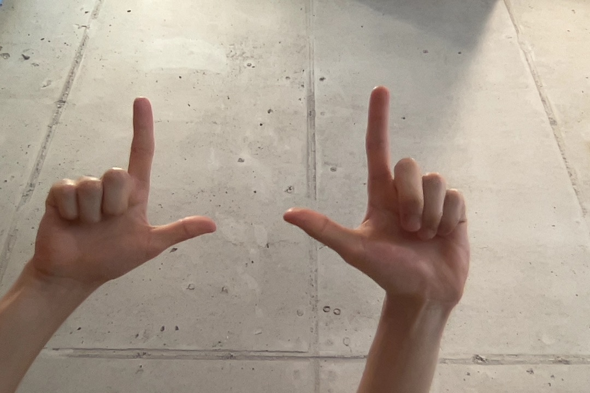
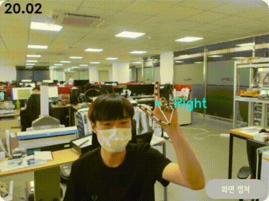
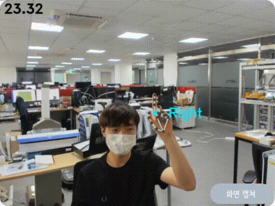

발표 모드는 일반적인 발표를 위한 모드로 마우스 제어, 다음 페이지 / 이전 페이지 이동, 포인터 강조 (레이저 포인터) 의 기능을 활성화하는 모드입니다. 터치패널의 발표 모드 버튼을 누르거나 발표 모드 글자 밑의 제스쳐를 양손으로 취해 발표 모드로 전환할 수 있습니다.

발표 모드로 전환하기 위한 제스쳐
발표 모드 기능 ✅
발표 모드에서는 마우스 제어, 다음 페이지 / 이전 페이지 이동, 포인터 강조 (레이저 포인터) 기능을 사용할 수 있습니다.
발표 모드에서는 마우스 제어가 활성화 됩니다. 엄지와 검지만 편 손 모양으로 마우스를 이동시킬 수 있습니다.

마우스 움직임
마우스 제어할 수 있는 손모양 (엄지와 검지만 편 손 모양)을 취한 상태에서 엄지를 접은 상태의 중지에 살짝 부딪혀 페이지를 넘길 수 있습니다. 또한 제어 손모양을 취한 상태에서 검지를 하늘 방향으로 한채 엄지를 아래 동영상과 같이 돌리면 이전 페이지로 돌아갈 수 있습니다. 아래 영상에서 확인해보세요!

다음 페이지 / 이전 페이지 이동
엄지, 검지, 중지를 편 손 모양으로 마우스의 움직임을 하는 동시에 마우스 포인터를 레이저 포인터 모양으로 바꿔 청자들을 집중하게 할 수 있습니다. 특정 부분을 강조하고 싶을 때 사용해 보세요!